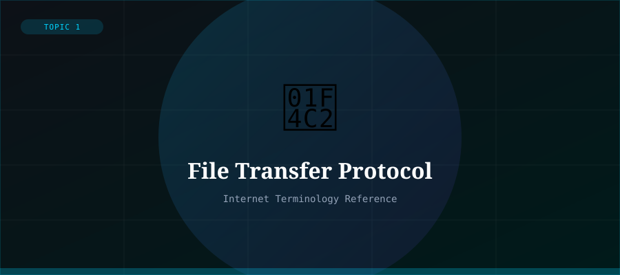

What is FTP?
File Transfer Protocol (FTP) is a standard network protocol used for the transfer of files between a client and a server over a TCP/IP network. FTP was one of the earliest Internet protocols, developed in the 1970s, and is still used today for uploading website files to a web server, sharing large files, and managing remote file systems.
FTP operates using a client-server model. The FTP client (software like FileZilla) connects to an FTP server, authenticates with a username and password, and can then upload, download, rename, delete, or manage files on the server.
How FTP Works
- Client connects to the FTP server (default port 21)
- Client authenticates with username and password
- Control connection is established for commands
- A separate data connection is opened for file transfers
- Files are transferred; connection is closed when done
FTP Security: SFTP and FTPS
Standard FTP transmits data — including usernames and passwords — in plain text, making it vulnerable to interception. Two secure alternatives exist: SFTP (SSH File Transfer Protocol) uses SSH encryption for all data; FTPS (FTP Secure) adds TLS/SSL encryption to standard FTP.
Modern best practice is to use SFTP or FTPS instead of plain FTP to protect sensitive file transfers.
Common FTP Clients
- FileZilla — free, open-source, cross-platform
- WinSCP — Windows-only, supports SFTP and SCP
- Cyberduck — macOS and Windows
- Command-line ftp — built into most operating systems